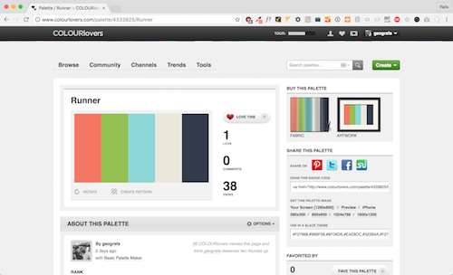
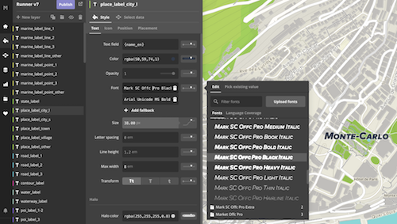

Inspired by many of the outdoor styles that are using Mapbox maps, I decided I wanted a style that highlights the amenities useful one would want when getting outside. I'm not a big runner but trails I do get out and about and if I find a new trail and it's not in OpenStreetMap, you can bet it's making its way in map.
I started with a palette in mind that I made in Colourlovers:
Colourlovers is great because you can test patterns and see how the colors hold up against each other. Once the general color scheme was set, I created a style with the Outdoor theme as a template.
Labels
Picking fonts is hard. I feel I got lucky just settling on Mark SC Offc Pro Black Italic because it called out the place names prominently and italicizing it made it feel, well, speedy.
That and the hierarchies for font sizes were already set in the Outdoors template.
Bridges and Tunnels
Bridges and tunnels changed in v6 of Mapbox Streets and were merged into the #road layer. The structure class field is now the key attribute for styling these different road types.
I didn't notice the change until looking at the odd loops in Monaco that seemingly crossed many contours.
Landcover and Topography
The Mapbox Terrain source really brings the map to life with its complete package of landcover types, hillshade, and contours. Everything from sand to scrub, many of attributes are available for styling. Adding a little texture to the landuse class of sand gave was just enough to give it the look and feel.

Parks and Trails
Walter writes to Oberstein and convinces him to meet in the smoking room of the Charing Cross Hotel where he promises additional plans for the submarine in exchange for money. The plan works and Holmes and Watson catch both criminals.
 Adapted from Project Gutenberg
Adapted from Project Gutenberg
Golf Courses
Walter writes to Oberstein and convinces him to meet in the smoking room of the Charing Cross Hotel where he promises additional plans for the submarine in exchange for money. The plan works and Holmes and Watson catch both criminals.
 Adapted from Project Gutenberg
Adapted from Project Gutenberg
Urban Areas
Walter writes to Oberstein and convinces him to meet in the smoking room of the Charing Cross Hotel where he promises additional plans for the submarine in exchange for money. The plan works and Holmes and Watson catch both criminals.
 Adapted from Project Gutenberg
Adapted from Project Gutenberg